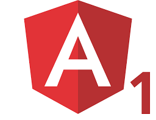

<div class="center-container">
    <header class="img-header">
        
        
    </header>
    <p>同时使用jQuery和Angular1构建你的应用，可以使用你所熟悉的任何jQuery插件</p>
    <p>但为了代码的可维护性，建议您还是将jQuery封装到directive中使用</p>
    <a ui-sref="login({id:18})" ui-sref-active="login" class="link">查看Angular1示例页面</a>
    <a ui-sref="main" ui-sref-active="main" class="link">查看jQuery示例页面</a>
</div>
